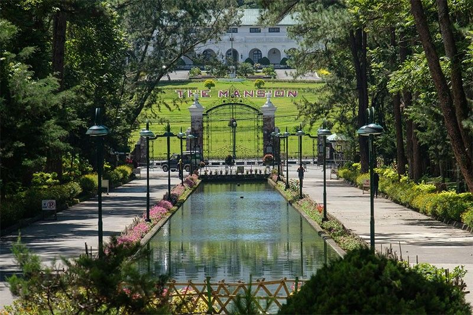
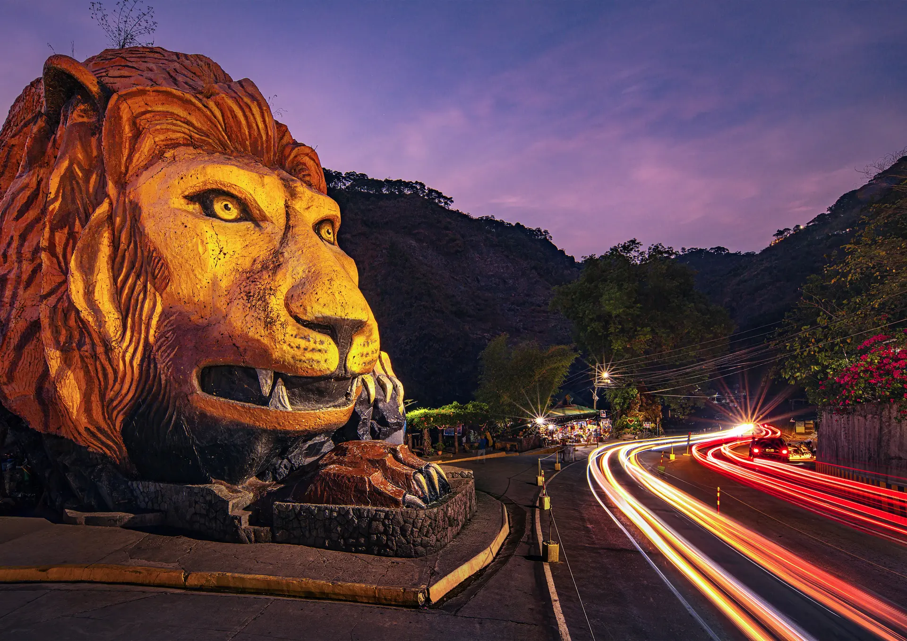

Mirador Heritage And Eco Park
Mirador Hill, Baguio City
A popular spot for tourists and locals alike, who come to enjoy the stunning views of Baguio City and the surrounding mountains and is also home to a bamboo grove, rock formations, and more.

Botanical Garden
Leonard Wood Road, Baguio City
A peaceful botanical sanctuary with towering pines, flower gardens, and cultural sculptures perfect for relaxing walks and photo spots.

Mines View Park
Mines View Road, Baguio City
A popular viewpoint offering sweeping mountain vistas, historic mining landscapes, and shops selling local crafts and treats.

The Mansion
Leonard Wood Road, Baguio City
The official summer residence of the Philippine President, known for its grand gate, manicured lawns, and historical significance.

Camp John Hay
Loakan Road, Baguio City
A historic leisure complex with pine forests, trails, cafés, and heritage sites perfect for outdoor exploration.

Lourdes Grotto
Dominican Hill Road, Mirador Hill, Baguio City
A beloved pilgrimage site featuring the Virgin Mary statue atop 252 steps and panoramic city views for reflective moments.

Good Shepherd Convent
15 Gibraltar Road, Mines View, Baguio City
Famous for ube jam and local pasalubong, this convent is a scenic stop for shopping, snacks, and quiet reflection.

Lions Head
Kennon Road, near Barangay Calasungay, Tuba, Benguet
The Lion’s Head along Kennon Road is a famous roadside landmark in Benguet, Philippines, carved into the mountainside as a large lion’s head sculpture.

Diplomat Hotel
Dominican Hill, Diplomat Road, Baguio, 2600 Benguet
This hotel holds a lot of history, from being a seminary to a hotel, and now a popular tourist attraction known for its architecture and ghost stories.

Wright Park
The Mansion, Romulo Dr, Baguio, Benguet
The park is a favorite spot for tourists and locals to enjoy leisurely walks, take photos, and experience the cool mountain air.

Igorot Stone Kingdom
Long Long Road, Pinsao Proper, Baguio City
The park celebrates Igorot culture through the traditional “riprap” stone-laying technique, which involves stacking stones without cement to create durable structures.

Dragon Treasure Castle
Block 8, Irisville Subdivision, Baguio City, Benguet
Dragon Treasure Castle is worth visiting if you want dramatic photos, fantasy-style architecture, and a short Baguio side trip that feels different from the usual city stops.

Tam-Awan Village
Long Long Benguet Rd, Baguio City, Benguet
Tam-Awan Village holds its true values and culture of the Cordilleran heritage.

Bell Church
Bell Church Rd, La Trinidad, Benguet
Bell Church is a Chinese temple known for its colorful architecture, serene gardens, and cultural significance to the local Chinese-Filipino community.